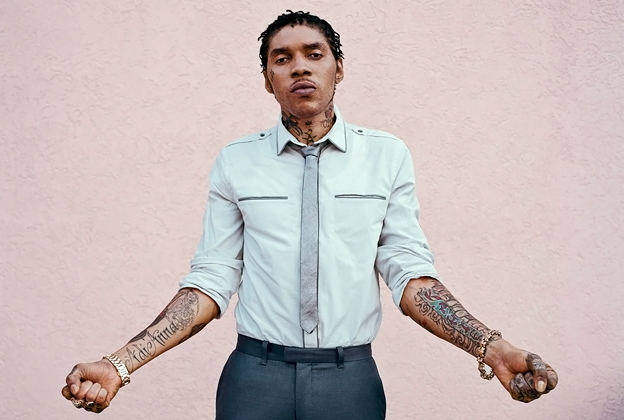
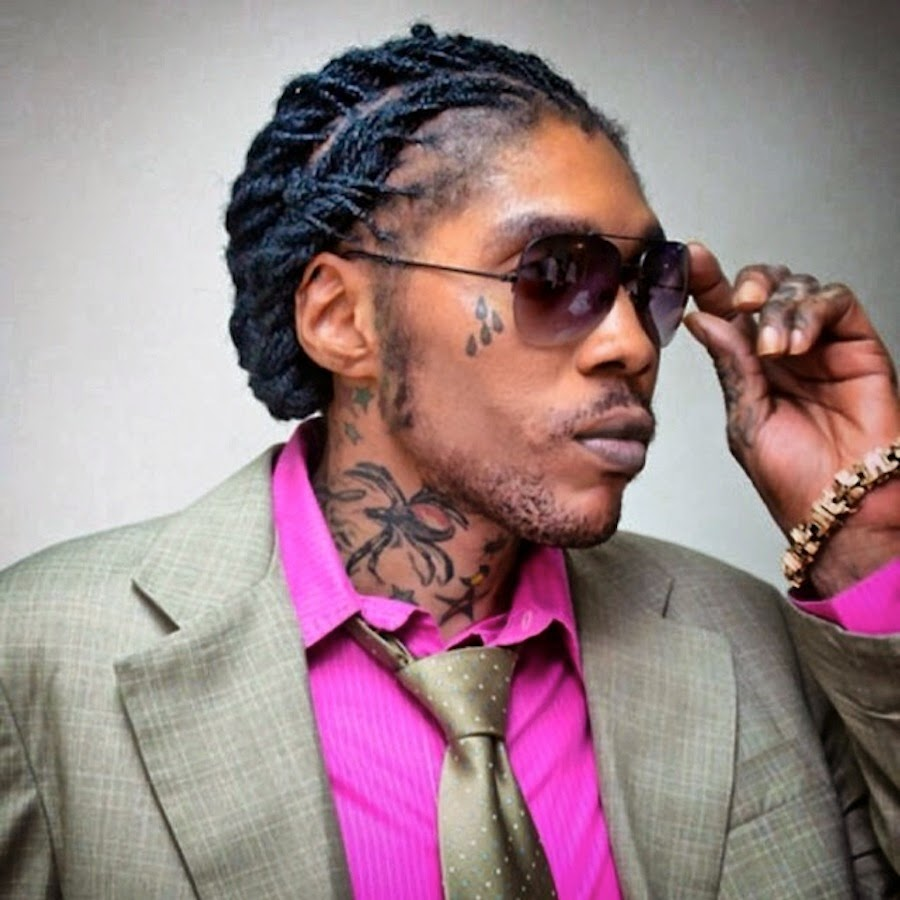
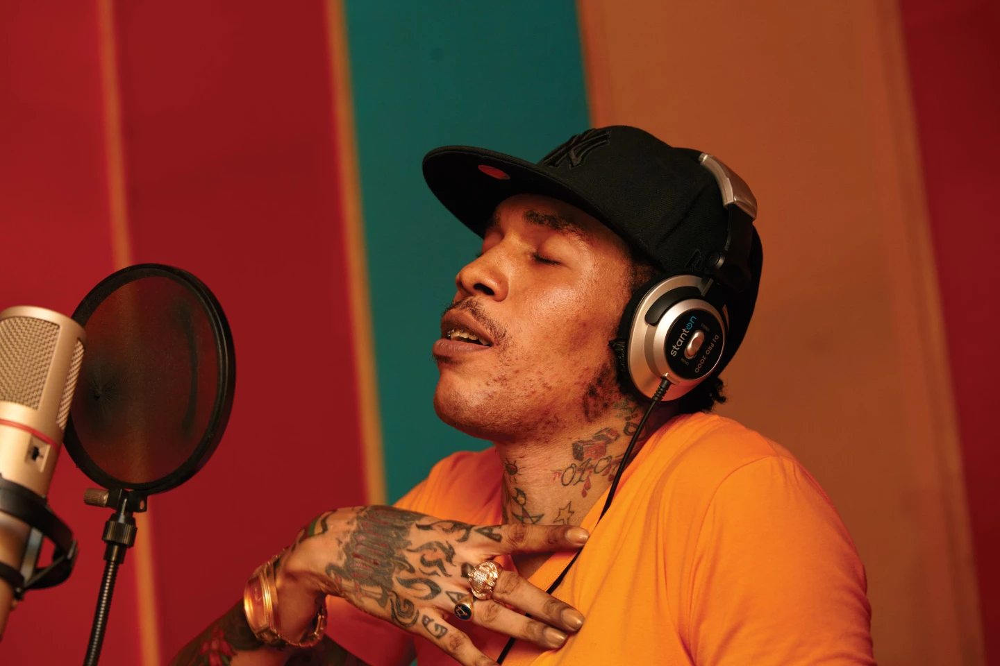

After his fued with Mavado, Vybz Kartel solidified his position as the top dancehall artist in the world. However, in 2012 Vybz Kartel was charged with the murder of Clive 'Lizard' Williams, of Waterford, St Catherine. His trial started on 18th of November 2013, and on 13 March 2014 he was found guilty by an eleven-member jury (10-1) of murder of 27-year-old Clive ‘Lizard’ Williams. The 65-day trial was said to have been the longest in Jamaica’s history. On 3 April 2014, Kartel was sentenced to life imprisonment. Justice Lennox Campbell said he would be eligible for parole after serving 35 years.


